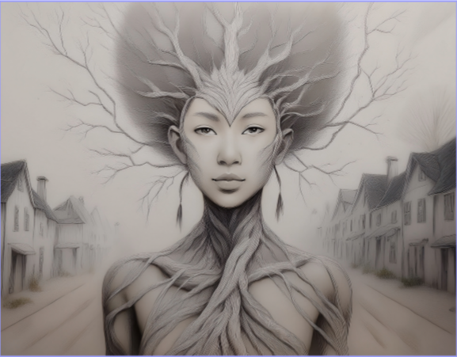

"Obtain supplies, divide up resources, and keep everyone happy in a time where tensions are high. "
The world is now hostile and in a small town aliens have now taken over. In Rations a survival game you are the leader of your small group of people tying to survive. Every week you will have to embark on quests allowing you to gain resources for you and your group. Once you complete your tasks you will be prompted to look over the resources that you have and the needs of everyone. Then you will have to make the tough decisions on who gets what and have to make sure that everyone's needs are met. Every choice makes or break your trust with your group and can lead to you being booted. Do you think you can rise to the challenge and keep the peace?
In Rations the peaceformers challenge is shown through the users decisions. The peaceformers challenge is about keeping peace between people.In Rations users have to go through quests in order to obtain resources which are then divided up. Quest are on a scale of very easy to hard allowing users not feel overwhelmed and are mini games which come with a mini story to each of them. Dividing up the resources is where the peaceformer theme is shown because that is what allows user to keep or break the peace. If you can not reach the people in your group needs you will lose a life and eventually if you keep going down the wrong path you could be botted from the team.
I choose the peaceformers challenge because keeping peace is something that I find very important in life. Keeping peace allows us to be able to work wth others and be able to acheieve our goals in a way where everyone can be happy. I chose to make a survival game because I feel like it really shows how important peace is wih others. In the game you have to make decisions that are tough but peace is something that always stays in your mind.

Description: Aurora is a healer tree person who is located in the town Aston and is now a victim of the year long drought that has plagued her town sadly. Being a healer tree means that she can heal those of their injuries and sicknesses with her magical bark skin yet can not heal herself. Along with that her branches that sprout from her hair allow her to get around easy in the woods making a clear path for her to walk. Aurora has both the traits of a human and a tree. She has eyes,ears,legs, arms,etc. Yet she also has wood skin and branches that come from her hair that sometimes grow leaves. Even if she is a person she still depends on the things that trees depend on like water.
Personality: Aurora is someone that is determined and stubborn. She is prepared to do whatever it takes for her to survive and won’t let this drought get the best of her even if it is affecting her tremendously. She is stubborn in the fact that she will go on any adventure that she sees even if it is dangerous. She practically walks into danger. One of her biggest strengths is how much resilience she has.Despite all that she has faced in the past Aurora doesn’t let the hardships that she encounters/dealt with effect her. She sees them as a way for her to learn and puts that knowledge towards the future. One of her biggest weaknesses is that she struggles with asking for help. Even if she is really struggling and is having difficulty with a task she would rather struggle and cause herself stress rather then asking for clarification or getting assistance. Ever since the drought this weakness has been shown more with her trying to to tasks that require a lot of strength and energy despite not being her normal self.
Role in game: Aurora is the main character in the game and is guiding the user on their quests. The user is helping Aurora bring Aston back to its former glory due to the magic fairies being kidnapped causing magic that runs the town to be gone. Aurora has watched everyone that she loves become weak and sick due to the drought and is not determined to make sure that this ends. Due to her being weak from the drought the user will help her and with all the tasks that she needs help with in return for food and resources while also learning more about the town and its secrets.